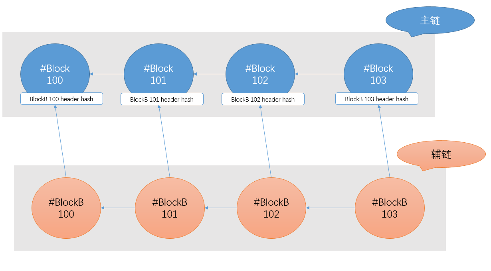
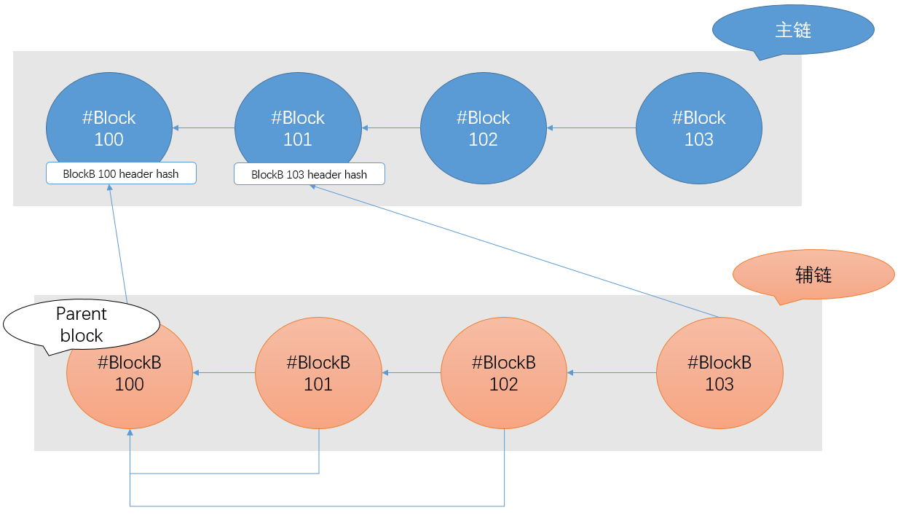
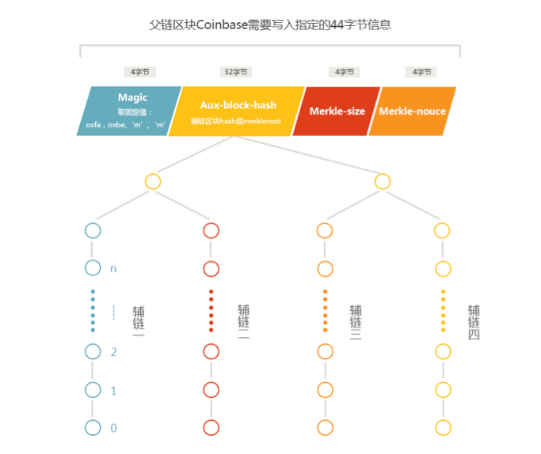
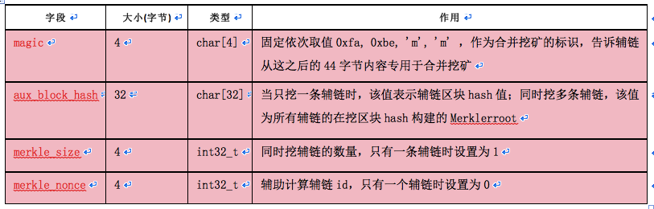
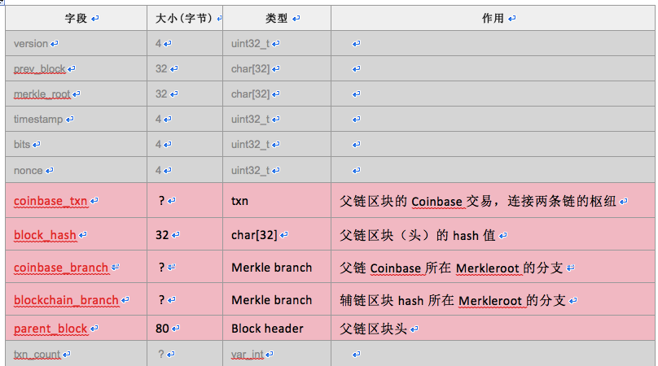
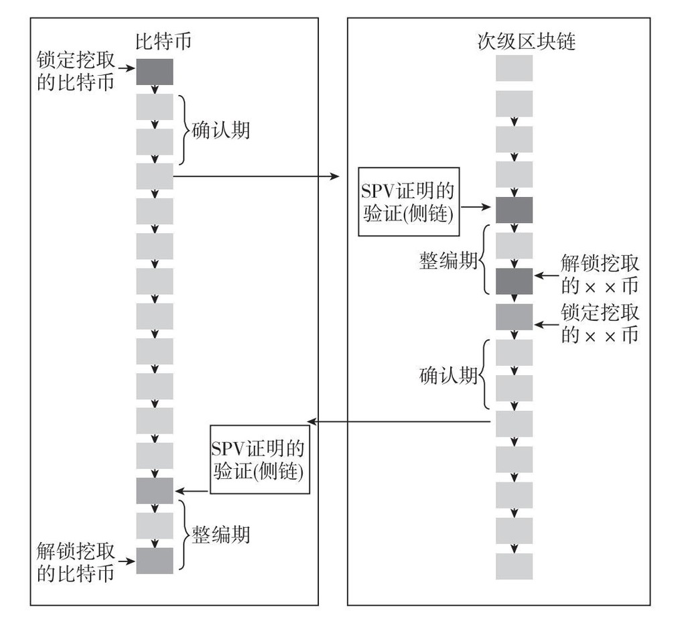
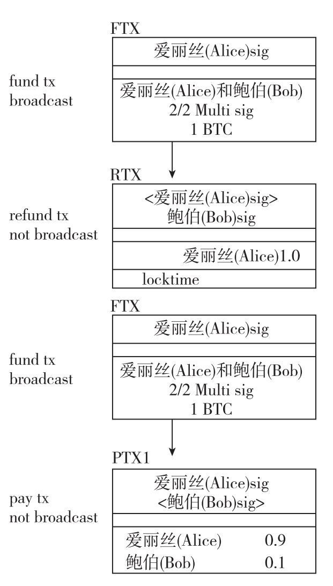
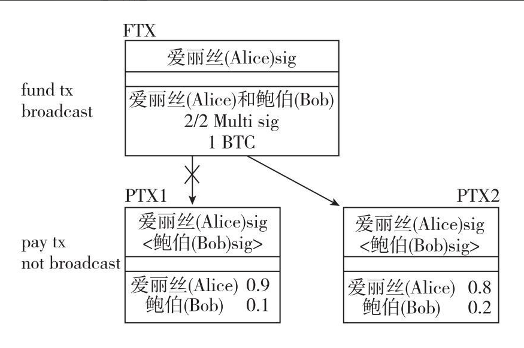

比特币的blockchain-2¶
比特币的发展史上，非常非常早期就出现了一种名为侧链(sideChains)的技术；
这个技术早在2008年比特币代码尚未发布时，就在论坛上有所讨论，后来比特币网络开始运行，各种Geek点子层出不穷，从最初的namecoin(域名币)，到后来的（Counterparty）、万事达币（Mastercoin）和彩色币（ColoredCoin）等附生链；再到后来百链齐开，大家试图在完全不同的链上转移交换资产；以及最近到blockstream的Liquid，以及基于闪电网络的原子交换(Atomic Swap)，这个技术的发展一直不温不火，但毫无疑问，侧链技术绝对是blockchain技术的重要组成部分。
顺便说一句，技术的演化是一个渐进的过程，中间甚至还会有倒退；比特币社区早期提出了非常多的天马行空的点子，但大多过于超前和激进，所以你说投机者也好，先烈也罢，大部分都湮没在历史风尘之中了；但是这些技术的一个重要应用，就是后来人再用几个高大上的名词包装一下，原样推出来继续割韭菜；
比如对比现在的一干稳定币；bitshares表示不服；
比如现在的各种DPOS算法，死去的先烈们纷纷表示生不逢时；
而且一个新技术出来，伴随着大量术语(有时候一个名词用不同语言说出来就感觉是两个技术)，比如各种Smart Contract，智能合约，双向锚定，智能资产，Oracles，预言机，图灵完备，零知识证明，分布式自治组织DAO，Dcententralize Autonomous Oganization，DAPP，hyperledger，DistributedLedger，DistributedNetwork，ERC20，~把人忽悠的一愣一愣的；
而且最让人想不通的，你要说某某技术是在比特币基础上搭建的，我们的第一反应就是:庞氏骗局；如果他说他的项目是踏着五色云彩，手持先知卷轴，以联盟链为基础，建立在全球的去中心化内容协议之上，采用了区块链与分布式存储技术，要构建一个世界范围内的自由金融体系，已经有XXX,YYY,ZZZ等各大机构支持投资，以及UUU,ZZZ等诺贝尔奖级别的专家背书，我们便会对其顶礼膜拜~~
好了，不八卦了；为了避免受骗，只有一个办法，就是这个世界谁都靠不住，只能自己搞明白，让我们看看这个侧链技术究竟是大忽悠还是真本事。
我初次接触到这个技术时，不禁感叹社区的强大，连这么匪夷所思的东东都能想出来，总之可以总结为:
还有这种操作?
那么，接下来就从2010年，比特币的早期说起，这个侧链的技术究竟是如果诞生、演化的。
BitDNS (第一个侧链概念的诞生)¶
2010/11/15，有人在bitcointalk.org发贴提出了建立一个类似于比特币的分布式DNS的系统，称之为bitDNS:
https://bitcointalk.org/index.php?topic=1790.0
这个帖子值得一再研究，里面整个一群英荟萃，讨论的内容在数年之后启发扩展出来了无数种山寨币。
讨论的起点是很简单的，就是有人受比特币启发，说要建立一条新的公链bitX，并在其上面发行多种资产，域名、比特币都仅仅是其中的一种资产而已。
一石激起千重浪，大家就一个分布式的DNS系统的实现展开热烈讨论。
讨论的结果是，既然比特币公链已经为我们提供了三种能力：
- 时间戳——证明事件的时间顺序
- 加密完整性——证明数据没有被篡改
- 身份验证——证明数据满足一些基本标准
那么为什么不以比特币的公链为基础锚定物，在其之上扩展出任意的资产呢？
这个想法非同小可，若干年后，除了namecoin，还衍生出来了（Counterparty）、万事达币（Mastercoin）和彩色币（ColoredCoin）等附生链，以及bitshares 这种基础设施，乃至大名鼎鼎的ethereum 的部分思想也可以追溯于此。
BitDNS的想法最终作为namecoin项目实现，让我们看看如果以比特币公链为锚，构造一个分布式域名系统。
namecoin¶
让我们遵循老习惯，先提出问题： 假如我们要建立一个去中心化的DNS系统，应该怎么做呢？
初版方案¶
众所周知，现下的DNS系统是由ICNAA来把持的，我们日常访问的所有域名记录来源于几个根服务器；乃至于https的证书颁发机构都是中心权威化的；密码极客们讨论建立一个去中心化的DNS系统已经好多年，比特币的出现无疑是一束光。
我们参照比特币的实现，将最小化的DNS信息记录上链，方案很明显，一个人持有私钥，对指定的域名签名，然后存到一条链上，那么就完成了对这个域名的所有权声明。将来如果这个域名需要转让，参照比特币的转账方式，构造scriptSig即可。
至于这条链是如何运行的，完全可以参考比特币，folk一份代码，构造一条完全独立的POW链即可。
DNS的解析、登记、TXT、A记录、CNAME等等所有其他功能，完全可以移交给三方开发商来提供服务，当域名所有者提供签名后，开发商请求namecoin 链进行验证即可。
二版方案¶
初版方案的设想非常简洁美好，已经完成了这个系统的大部分，但是还有一点小问题要解决一下：
- 传统的域名注册、续签等等都需要付费，初版系统没有经济激励，很容易造成域名抢注和滥用
解决办法也很简单，就是引入一种代币(namecoin)，注册和续签、以及转移，都需要花费namecoin作为手续费；而获取namecoin的手段，则是挖矿。
三版方案¶
设计至此，已经非常完美了。但是社区成员进一步思考，既然比特币的主链已经提供了足够的算力来保障其安全，我们为什么为了发行另外一项资产，就要另起炉灶开启新的POW竞争呢？
POW算力链，只有一份保障就够了，没有必要开启其他的同样的POW链。
- 那么问题来了，如何用比特币的主链来保障namecoin链的唯一和不可篡改呢？
答案就是将namecoin链的每一个block hash值嵌入到比特币的主链上，这样namecoin就作为一条侧链依附于比特币主链，在比特币全网POW算力的庇护下茁壮成长。
- namecoin的block hash 怎样嵌入比特币主链上呢？
答案是嵌入在比特币挖矿交易的coinbase中；这样比特币矿工可以同时加入到bitcoin和namecoin的网络中，每挖到一个块，可以顺便嵌入namecoin的block header到coinbase里面，顺便获得一些namecoin，这样也保障了namcoin主网的安全。
四版方案¶
我们把bitcoin blockchain称之为主链，namecoin block chain称之为辅链；
想象当中，两条链的结构是这样的:

那么，挖矿的难度应该怎么设计呢？我们要求该父链区块的难度必须符合辅链的难度要求：
将辅链区块的hash值内置于父链的Coinbase，其实是利用父链作存在证明。这样就可以实现间接依靠父链的算力来维护辅链安全。一般来说，父链的算力比辅链大，因而满足父链难度要求的区块一定同时满足辅链难度要求，反之则不成立。这样一来，很多本来在父链达不到难度要求的区块，却达到辅链难度要求，矿工广播到辅链网络，在辅链获得收益，何乐而不为。
到这里看起来已经非常好了，但是且慢，还有一个问题，就是这样就限制了辅链block的生成速度，每挖一个主链block，只能顺带挖一个辅链block，是不是有点太死板了呢？要知道，可能将来有些资产应用，会要求更灵活的区块生成间隔时间，这个问题怎么解决呢？
五版方案¶
辅链除了用prev block 指针组成一条chain，还又引入了另外一个指针： parent block； 这样每几个block可以归附于一个parent block，挂接在主链的同一个block下面；这样就实现了挖一个主链block，附带挖多个辅链block；结构如下:

在这张图中，主链的block100只挂接了辅链的blockB100，但是blockB101，blockB102都指向同样的parent block，就是blockB100，这样就实现了只用主链的blockB100，同时挂接辅链的三个区块(blockB100、blockB101、block102)；
一个parent block可以后续有多个block，辅链验证的一个block是否合法的时候，需要三步验证：
- 首先按照辅链的规则验证此block是否合法
- 查看它是否属于一个parent block，若有，验证此parent block是否合法
- 验证此block或者其parent block所挂接的主链block是否合法
嗯哼，完美！
六版方案¶
世界上不存在完美的方案，很快，我们又迎来了新的挑战： 以主链为锚定，我们想要有多条辅链的时候该怎么办？
答案是merkle结构，就像bitcoin的block用merkle聚合了多笔交易一样，我们再次用merkle聚合多条辅链的parent block header。
最终的设计细节如下:

AuxPOW协议对两条链都有一些数据结构方面的规定，对于父链，要求必须在区块的coinbase的scriptSig字段中插入如下格式的44字节数据：

对于辅链，对原区块结构改动比较大，在nNonce字段和txn_count之间插入了5个字段，这种区块取名AuxPOW区块。

混合挖矿要求父链和辅链的算法一致，是否支持混合挖矿是矿池的决定，矿工不知道是否在混合挖矿。矿池如果支持混合挖矿，需要对接所有辅链的节点。
将辅链区块hash值内置在父链的Coinbase，意味着矿工在构造父链Coinbase之前，必先构造辅链的AuxPOW 区块并计算hash值。如果只挖一条辅链，情况较为简单，如果同时挖多条辅链，则先对所有辅链在挖区块构造Merkleroot。矿池可以将特定的44字节信息内置于上文Stratum协议中提到的Coinb1中，交给矿工挖矿。对矿工返回的shares重构父链区块和所有辅链区块，并检测难度，如果符合辅链难度要求，则将整个AuxPOW区块广播到辅链。
辅链节点验证AuxPOW区块逻辑过程如下：
- 依靠父链区块头（parent_block）和区块Hash值（block_hash，本字段其实没必要，因为节点可以自行计算），验证父链区块头是否符合辅链难度要求。
- 依靠Coinbase交易（coinbase_txn）、其所在的分支（coinbase_branch）以及父链区块头（parent_block），验证Coinbase交易是否真的被包含在父链区块中。
- 依靠辅链分支（blockchain_branch），以及Coinbase中放Hash值的地方（aux_block_hash），验证辅链区块Hash是否内置于父链区块的Coinbase交易中。
通过以上3点验证，则视为合格的辅链区块。
需要注意的一个字段是主链上的merkle_nonce； 因为一个矿工可能同时挖多条辅链，而每开采主链上一个合法的block，可能会带有数目不定的多条辅链，为了区分每条辅链的链接位置，即通过辅链的id确定这条辅链链接的索引号(也称为slot num)，引入了一个nonce，算法如下：
1 2 3 4 5 |
unsigned int rand = merkle_nonce; rand = rand * 1103515245 + 12345; rand += chain_id; rand = rand * 1103515245 + 12345; slot_num = rand % merkle_size |
以上就是初代侧链的实现技术!¶
单向锚定 (one-way peg) 协议¶
通过namecoin的讨论，我们看到了以比特币主链为锚定，发展无数条侧链的方案，这个方案仅仅依赖于coinbase交易中写入一点点信息而已；
但是这个方案的严重局限就是，侧链币的生产也要依赖于比特币的挖矿活动，这样多少有些限制；有没有一种办法，可以脱离比特币的挖矿限制，但是又能复用比特币的工作量证明呢？
有的，这就是2013年社区提出来的 one-way peg技术；
这项技术与namcoin等侧链技术不同的地方在于，侧链的锚定信息不去写入到coinbase交易里面，而是由比特币链上创造一笔燃烧交易，在这笔交易的OP_RETURN段里面写入需要的信息，这个过程称之为 proof-of-burn；
我们具体举一个例子：
我们想要创造一个名为MoonChain的侧链以比特币主链为锚，想要在上面发行一种MoonCoin代币用来搞定月球土地流转交易等等；那么初始的铸币工作怎么来完成呢？
作为创始人，我首先需要一个合法的比特币私钥，对应的控制地址为A，那么我现在构造一笔交易，发送1BTC至地址1111111111111111111114oLvT2，众所周知，这个地址是无主的，发送到这里就算是燃烧销毁了这个币，妙处在于，我们在这笔交易的OP_RETURN里面附上这样一段脚本，脚本的大意这么规定：
燃烧交易的源地址销毁1BTC，同时此地址铸币1MoonCoin；
这表交易通过几个区块确认后，就铭刻在区块链里面了；同样的，MoonCoin的转移也可以用类似燃烧交易种的OP_RETURN来表示；
凡是遵守这套规则的交易，就可以完成MoonCoin的铸造和转移，甚至可以另外实现智能合约等等功能，这些交易携带的信息就组成了一条侧链，即MoonChain；
把这些套路总结为规范，就可以用燃烧交易的方法来创造侧链啦；
这个规范名为omni协议：
遵循omni协议在bitcoin主链上发行的资产已经超过了400多种币，但只有一种币声名在外：USDT。
顺便吐槽一下USDT，巴菲特曾多次说比特币是老鼠药的平方(现在这个时间点这样评价比特币确实公正客观)，但在我来看USDT是老鼠药的1024次方。
后来BCH团队也在BCH链上发行了类似的资产，称为 Wormhole Cash（WHC），目的是在BCH链上实现智能合约。
因为整套技术是通过燃烧比特币来铸造新币，看起来好像是比特币从主链上转移到了侧链上(以新币的形态再生)，人们就把它俗称为单向锚定 (one-way peg) 技术¶
单向锚定最大的问题在于比特币的主链不欢迎额外的无效信息，OP_RETURN被限制在80字节，承载的信息有限；BCH的态度更为激进，它在2018-05把OP_RETURN提升到233字节，并计划进一步提升。
双向锚定（Two-way Peg）协议¶
有了单向锚定，自然会有人想：能不能不需要燃烧比特币，只是将比特币在主链和侧链之间来回移动:
- 铸币的时候，将比特币移动到侧链生产代币
- 代币销毁的时候，将比特币移回主链
当然可以，2014-04，Adam Back (Blockstream创始人) 提出双向了锚定技术:
https://letstalkbitcoin.com/e99-sidechain-innovation
很快的，V神也在他的专栏上对此技术做了简单的剖析：
https://bitcoinmagazine.com/articles/side-chains-challenges-potential/
双向锚定对于单向锚定的扩展，其实也很容易理解。单向锚定时，侧链锚定主链的方法是主链燃烧比特币，然后存贮一个工作量证明；
我们知道比特币的交易本质上是一组脚本语言，那么，把燃烧交易的输出换成一组特定的脚本，它只允许特定的持有人和市场参与方才能解锁，那么，这笔交易在侧链赎回的时候，就可以由多方再构建一个解锁脚本，比特币就会安然无恙。
双向锚定分为以下几个阶段，下面简单说一下这个过程：
发送锁定交易，把比特币锁定在主链上¶
由比特币持有者操作，发送一个特殊交易，把比特币锁定在区块链上。
等待确认期¶
确认期的作用是等待锁定交易被更多区块确认，可防止假冒锁定交易和拒绝服务攻击，等待时间是1~2天。
在侧链上赎回比特币¶
确认期结束后，用户在侧链上创建一个交易花掉锁定交易的输出，并且提供一个SPV工作量证明，输出到自己在侧链上的地址中。该交易称为赎回交易，SPV工作量证明是指赎回交易所在区块的工作量证明。
等待一个竞争期¶
竞争期的作用是防止双重支付。在此期间:
- 赎回交易不会被打包到区块；
- 新传输到侧链的比特币不能使用；
- 如果有工作量更大的工作证明出现，即该赎回交易包括了比特币主链更大难度的SPV证明，则上一个赎回交易将被替换。
竞争期结束后，该赎回交易将被打包到区块中，用户可以使用自己的比特币。
从侧链转比特币到主链的过程也是如此。这就是侧链双向锚定协议。

Blockstream Liquid协议¶
双向锚定的关键，在于主链锁定交易的输出脚本，很明显的，如果依赖于锁定者，那么这个输出完全不能信任，锁定者在任何时刻都能提币走人；比较安全的做法是输出到一个N/M多重签名的地址中，由多方利害关系的人共同保管；
基于这个思想，Blockstream开发了Liquid侧链想要实现商业化， Liquid期望多个大型交易所之间能方便的实现币的交易、转移等等服务，而不是受限于主网的交易速度；
Liquid是个非常严肃的商业项目，但我个人认为这是一个人造需求的项目，其原因在于在侧链技术蓬勃发展过程中，还平行的出现了另外一种技术逐渐成长壮大，就是微支付通道技术。
微支付通道¶
2011年，早期的bitcoin开发者Mike Hearn 向中本聪问及nLlockTime字段的含义，中本聪回复邮件，解释这是考虑用于创建一个通道来高频支付，后来Mike Hearn在2013年将这些邮件公之于众：
邮件中，中本聪写道:
It’s for contracts. An unrecorded open transaction can keep being replaced until nLockTime. It may contain payments by multiple parties. Each input owner signs their input. For a new version to be written, each must sign a higher sequence number (see IsNewerThan). By signing, an input owner says “I agree to put my money in, if everyone puts their money in and the outputs are this.” There are other options in SignatureHash such as SIGHASH_SINGLE which means “I agree, as long as this one output (i.e. mine) is what I want, I don’t care what you do with the other outputs.”. If that’s written with a high nSequenceNumber, the party can bow out of the negotiation except for that one stipulation, or sign SIGHASH_NONE and bow out completely.
The parties could create a pre-agreed default option by creating a higher nSequenceNumber tx using OP_CHECKMULTISIG that requires a subset of parties to sign to complete the signature. The parties hold this tx in reserve and if need be, pass it around until it has enough signatures.
One use of nLockTime is high frequency trades between a set of parties. They can keep updating a tx by unanimous agreement. The party giving money would be the first to sign the next version. If one party stops agreeing to changes, then the last state will be recorded at nLockTime. If desired, a default transaction can be prepared after each version so n-1 parties can push an unresponsive party out. Intermediate transactions do not need to be broadcast. Only the final outcome gets recorded by the network. Just before nLockTime, the parties and a few witness nodes broadcast the highest sequence tx they saw.
短短几句话，充分说明了中本聪在创始比特币之初，就已经考虑到了将来的微支付问题！
那么，这个微支付通道技术究竟是如何实现的？我们搬运一个例子说明一下：
假设Alice为消费者，Bob为一家视频网站。Alice非常喜欢去Bob网站看电影，看一部电影需要支付0.1BTC（比特币），那么Alice看了10部电影就需要支付10次0.1BTC，共计1BTC并发出10笔交易。而采用微支付通道就会缩减至两笔，或者说任何多次的交易均会缩减至两笔，只要总金额不超过存入通道的额度即可。
通道（Channel）的建立以及更新过程如下。
- Alice支付1BTC至一个多重签名地址，签名采用2/2方式，我们把该交易称为FTX(Fund Tx)。Alice生成该交易后，并不广播。
- Alice再构造一个赎回交易，称之为RTX(Refund Tx)。其输入为交易FTX的输出，输出为Alice自己。同时，该交易有Locktime锁定期，所以N天之后才会生效，才可以进块。
- Alice把构造好的空RTX给Bob，并让Bob进行签名。
- Alice拿到带有Bob签名的交易RTX后，广播出FTX。此时的交易结构如下图,图中带有尖括号的签名表示待填入:

- Alice再看了一部电影，那么她需要再支付0.1BTC给Bob。于是，Alice构造另一笔交易PTX2：输入依然是交易FTX；输出为两个地址，其中Alice为0.8BTC，Bob为0.2BTC。Alice对该交易签名，并将交易和她的签名给Bob:

- Bob可以随时签名并广播交易PTX2，当然，他依然可以广播交易PTX1。作为一名理性经济人，Bob必然总是广播自己收益最大的那笔交易，也就是当前的PTX2。在目前总是Alice付款的情况下，Bob总是乐于广播最后一个交易。
- 当Bob广播出最后一笔交易PTXn时，则意味着通道关闭，合作结束。Bob需要在交易RTX锁定期结束前关闭通道，否则意味着Alice可以在交易RTX解锁后否则意味着Alice可以在交易RTX解锁后拿回她所有的币。
上述，就是微支付通道建立、更新与关闭过程。在一个完整的过程中，有且仅有两笔交易广播至链上，同时双方均无须信任对方，任何一方也无法侵害另一方的利益。在更新过程中双方只是交换交易和签名数据，并无交易广播至链上，那么意味着在存入额度范围内，可以创造出无数笔交易。不仅通道内的更新次数不受限制，频率也可以达到非常高，只要系统允许，目前硬件条件可以轻松达到每秒数千笔。
闪电网络¶
在特定场景下，微支付通道拥有着巨大优势，让小额高频支付成为可能。但它存在一个巨大制约：币在通道中的流向是单向的。在上述例子中，币仅能从Alice流至Bob。
社区自2013年开始，经历了漫长的探索，争论; 在2015年提出了闪电网络的解决方案。
关于闪电网络，我们在之前的文章中有详细讲解，这里不再赘述。
闪电网络目前正在一步步实用化中；顺便说一句，笔者从事银行支付业务监控多年，我得说，闪电网络的支付方案相对于传统支付技术，有着不可思议的跨越，这项技术的未来不可限量。
原子交换和跨链交易¶
- 侧链技术可以锁定主链的币并将其等价Token转移到另一条链上，以及其逆过程；
- 微支付通道技术实现了同一条链上，交易双方链下高速交易；
那么有没有一种办法，可以实现已经完全运行的区块链间的互通呢？ 比如比特币和以太坊之间的无需三方信任的兑换？
这是可以的，这个技术名为原子交换(Atomic Swap)：
缘起¶
原子交换技术的发展时间基本上与微支付通道的技术是平行的，他们之间也非常相似，可以考据的最早的资料，是2013年有人在bitcointalk.org上发表的一篇文章：
https://bitcointalk.org/index.php?topic=193281.msg2224949#msg2224949
协议¶
它的实现条件使用了 HTLC 和博弈论思想。HTLC 在比特币上早已有，而在支持智能合约的区块链上就更容易实现了。
HTLC 的全称是 Hashed Timelock Contracts，原子交换基本是依赖它构建的。可以把 HTLC 理解成一种条件输出，只要满足这个条件你就能花这笔钱。它有两种类型
Hashlock：给你一个哈希值，当你给出它的原像时，你就可以花这笔钱 Timelock：在某个时间点之前，你不能花这笔钱。只有这个时间点之后才能花。
没有错，如果你仔细看过我们之前的文章，这个HTLC其实也是闪电网络的一部分技术，并且如果你完全理解了闪电网络，就会发现原子交换非常相像，不过它是在两条不同的链之间的交易；
过程¶
以下内容引自:https://zhuanlan.zhihu.com/p/31689532
为了解释原子交换的流程，又要祭出我们的 Alice 和 Bob。
阅读前注意
- “交易”都是指区块链上的 transaction，而“交换”指原子交换这个协议
- tx11 表示满足 tx1 解锁条件 1 的交易，tx12 表示满足 tx1 解锁条件 2 的交易；tx21 和 tx22 同理。
场景：Alice 用 1BTC 与 Bob 交换 3ETH。过程如下¶
Alice¶
- 生成随机数 a 并计算 hash(a)
- 生成 1BTC 的比特币交易 tx1，但不先广播。tx1 的输出是分支输出：当解锁脚本满足下面某个分支时，可以花费 tx1 里的 1BTC
- Alice 和 Bob 的签名
- hash(a) 的原像和 Bob 的签名
- 生成交易 tx11，该交易把 1BTC 从 tx1 转到 Alice 自己的地址里，有 48h locktime，即要前一笔交易上链后过 48h，本交易才能上链。这笔交易是为了保证在整个交换过程失败时，Alice 可以取回她的钱。
- 请求 Bob 对 tx11 的签名。此后，Alice 再附上自己的签名，tx11 就同时有 Alice 和 Bob 的签名。但 Alice 不能上链该交易，她需要等到 48h 的 locktime。
- 广播 tx1，该交易上链。
Bob：做和 Alice 相似的操作¶
- 确认 tx1 上链后，生成 3ETH 的以太坊交易 tx2，但先不广播。tx2 的输出也是分支输出：当解锁脚本满足下面某个分支时，可以花费 tx2 里的 3ETH
- Alice 和 Bob 的签名
- hash(a) 的原像和 Alice 的签名（Bob 可从已上链的 tx1 知道 hash(a)）
- 生成交易 tx21，该交易可以在 24h locktime（一定要比 tx11 的 48h locktime 短）之后，把 3ETH 从 tx2 转回 Bob 的以太坊地址里。
- 请求 Alice 对 tx21 的签名
- 广播 tx2，该交易上链。
成功的情况¶
- Alice 确认 tx2 上链后，在 24h 内构造并广播交易 tx22：将 3ETH 从 tx2 里转到 Alice 的以太坊地址里（满足 tx2 的解锁条件2：揭露 a 和 Alice 的签名）。tx22 上链以太坊网络。
- Bob 从广播的 tx22 里得到 a 后，构造交易并广播 tx12：将 1BTC 从 tx1 里转到 Bob 的比特币地址里（满足 tx1 的解锁条件2：揭露 a 和 Bob 的签名）。tx12 上链比特币网络。
- 交易完成
失败的情况¶
- 若 24h 内，Alice 没有构造并广播交易 tx22。
- 则 24h 后，Bob 签名并广播 tx21（超过 locktime，且同时有 Alice 和 Bob 的签名），把 3ETH 转回给自己。tx21 上链以太坊网络。
- 48h 后，Alice 同理广播 tx11，把 1BTC 转回给自己。tx11 上链比特币网络。
- 交易失败，但双方都不会损失钱。
原子交换里交易的上链顺序应该为：tx1->tx2->Max(tx12, tx22)。前一个交易应该等到后一个交易完全上链，才能保证整个过程的绝对安全，双方都不会损失钱。
缺陷¶
原子交换看似安全，实际还是存在不少缺陷的。
- 可以看出，不管交换成功或失败，总会有 4 个交易被上链。如果按照比特币现有的拥堵状态和高手续费，原子交换是基本行不通的，代价过高且会有损失钱的风险。
- 在考虑外部市场后，会存在对手风险，原子交换是不适用的。如在上面的协议描述里，Alice 和 Bob 已经将 tx1 和 tx2 上链。则这之后，原子交换的成功与否取决于 Alice 是否要抛出 hash(a) 的原像，她有 24h 的考虑时间去决定。那在这 24 小时内，Alice 大可在对比交易所和原子交换的比率差别，如果交易所的汇率对自己有利，那就去交易所交易，抛弃原子交换。在这种情况下，Alice 除了会锁定 48h 的币，没有其他风险，风险全部转嫁给了 Bob。 那么有人说，缩短 24h 和 48h 的参数设定就好了啊。但无论怎么缩短，这个风险都不能消除。且缩短锁定时间还可能带来安全风险。
- 除此之外，还有一种攻击。在 tx1 和 tx2 上链后，Bob 完全封锁 Alice 的网络（由于存在点对点通信，会增加这种风险）。Alice 发出的 tx22 无法广播到网络里，但 Bob 可以截取到。Bob 因此可以得到 Hash(a) 的原像，从而上链 tx12（满足 tx1 的解锁条件2）拿到 1BTC。之后，Bob 再封锁 Alice 的网络 24 小时，他就又可以上链 tx21（满足 tx2 的解锁条件1）拿到 3ETH。 那有人说，只要 Alice 迟迟发现自己发出的 tx22 不上链，那就去找个网吧重新发交易啊。Bob 总不能连人去哪都可以追踪吧。这确实是最简单的抵御方法。但也说明，原子交换需要人类来监控，在完全程序自动化的条件下完成仍存在风险。
-
Atomic Swap并不能在任意两种虚拟货币之间自由的发生，他们必须要满足如下条件：
-
必须有共同的哈希算法
- 都具有时间锁定功能
- 脚本执行过程中验证签名
去中心化交易所¶
Atomic Swap的优点也是非常明显的，区块链发展史上，发生了大量的中心化交易所跑路事件；有了Atomic Swap，总算技术上可以建立一个去中心化的，无需三方信任的交易所了；
这意味着，去中心化、无信任的交易成为可能，用户将能够保管他们的虚拟货币，并自由的兑换其他虚拟货币。不管怎么说，原子交换是一项非常有趣的创新，可能会改变加密货币交易的格局。
结语¶
侧链、跨链等等技术是这两年的热门技术，尤其是Ethereum、EOS等项目支持更丰富的脚本，提供了更多的玩法；所以在这个领域颇有一些炫技的味道—各路英雄好汉提出种种精巧到不可思议的技术，只是把一堆空气币搬来搬去；
这系列文章也快写到结尾了，我一直对比特币抱有非常善意、乐观的态度；我深深明白，自大会蒙蔽判断力，为此我也一直非常认真的学习社区里面每一天冒出来的种种高科技~
但是，我忍不住说(是的，我也化身为自己讨厌的那种人)： 当前所谓的各路区块链技术看起来非常像是空中楼阁！ 区块链技术是一种梦幻的技术，所谓的侧链是梦中的梦，我毫不怀疑这是一项精巧到令人赞叹的发明，也毫不怀疑它有非常远大的前景；但这都是几十上百年之后的事情，目前为止，就是个大泡沫；
因为这种梦幻技术的简洁明了，让每个理解它的人不自觉的沉迷其中，我甚至都觉得一条chain都有艺术上的美感；但是始终要明白，它现在只是一个艺术品，收藏品，进化为工业产品还有非常非常长的路要走~
在这场泡沫之舞中，唯有耐心¶
有一句话非常适合比特币信徒们：
我并不仅仅在寻求“结果”…如果只为了寻求“结果”的话，人是容易走捷径的…在走捷径时，也许就会迷失真实，甚至连满腔的热忱也会逐渐丧失。我认为重要的是“寻求真实的意志”！只要有了这种向真实前进的意志，即使这次失败了，我也终于会达到目标的，因为我仍在继续前进…这是不会错的。
参考资料:¶
http://www.blockstream.com/sidechains.pdf
https://en.bitcoin.it/wiki/Atomic_swap
https://github.com/decred/atomicswap
https://en.bitcoin.it/wiki/Merged_mining_specification
https://en.bitcoin.it/wiki/Sidechain
https://www.ccvalue.cn/article/1495.html